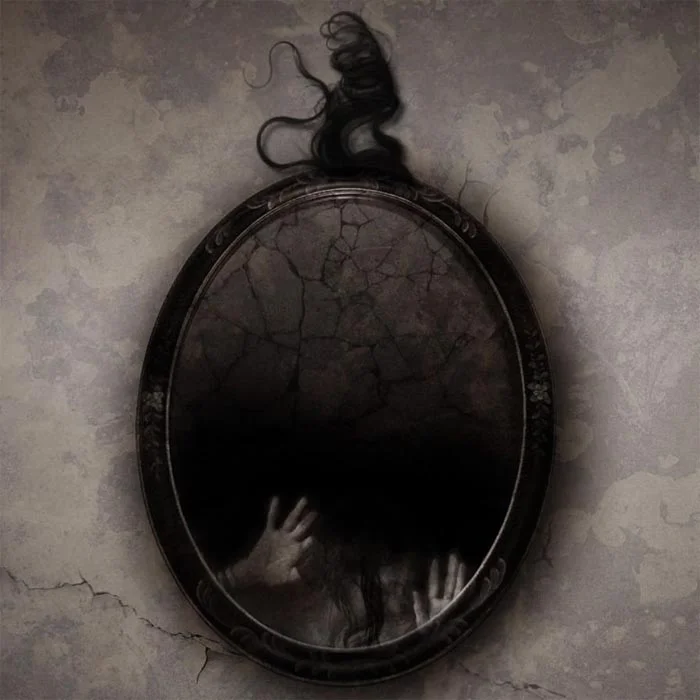

Короткие пужалки

Я проснулся, услышав стук в стекло. Сначала я подумал, что стучали в окно, пока снова не услышал стук... из зеркала.
♦
Улыбка облегчения появилась на его лице, несмотря на то, что его рука почти по локоть была погружена в мясорубку и он сказал: ” Кажется, я чувствую твое кольцо!”
Я тоже улыбнулась в ответ: ”О, это здорово, дорогой ... и я знаю про вас с Ванессой”, - щелкая выключателем.
♦
Перед тем как мои родители уехали из города на выходные, они укрыли меня одеялом, заперли дверь моей спальни и сказали, что бояться нечего: монстры никак не могут проникнуть в дом.
Если бы они задержались еще на секунду, то услышали бы их смех из шкафа.
♦
Я смотрю на часы, на них 3:15. Вдруг огромный косматый монстр хватает меня за горло. Я кричу и просыпаюсь. Это всего лишь сон. Смотрю на часы, на них 3:14 и вижу, как дверь моего шкафа со скрипом открывается…
♦
Мне постоянно снился сон, что меня убивает человек, которого я никогда не встречала. Я думала, что это глупо, пока не пошла на свидание вслепую и не увидела его за столиком.
♦
Я всегда думала, что у моей кошки проблема с пристальным взглядом, она всегда казалась зацикленной на моем лице. Пока однажды я не поняла, что она всегда смотрит прямо мне за спину.
♦
Я только что увидела, как моргнуло мое отражение.
♦
Дедушка умер, куря сигару в своем любимом кресле. Мы купили другое... И судя по следам от пепла, у него появилось новое любимое кресло.
♦
Продается: практически новое обручальное кольцо, почти не ношенное, снятое с ее пальца. Палец также выставлен на продажу по подходящему предложению.
♦
Моя девушка очень боится фильмов ужасов. Они делают ее параноиком, так что мне непросто наблюдать за ней в окна ее дома.
♦
Врачи сказали человеку с ампутированной рукой, что у него может время от времени появляться чувство фантомной конечности.
Однако никто не подготовил его к тому, что он иногда чувствовал, как холодные пальцы качались его фантомной руки.
♦
Нож режет, как масло.. Но я старалась быть любящей матерью.
♦
Я не могу двигаться, дышать, говорить или слышать и круглый день так темно. Наверное меня следовало кремировать, а не хоронить в земле.
♦
Я замечал это в течение нескольких месяцев, эту крошечную задержку в моем отражении, но мне никто не верил. Сегодня все было по-другому, оно даже не пыталась подражать мне,
а просто стояло там и улыбалось, потом сказало, что хочет выйти.
♦
Я полез под кровать, чтобы найти свой пропавший носок. Но вместо этого нащупал другую руку.